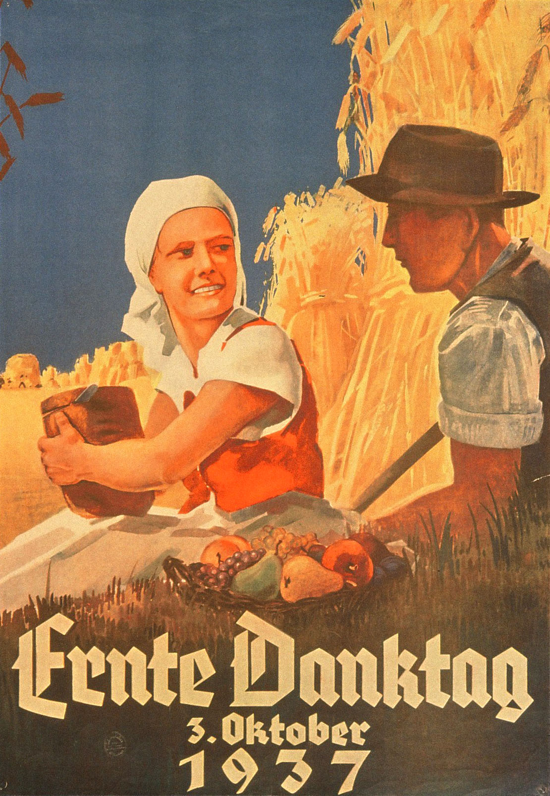
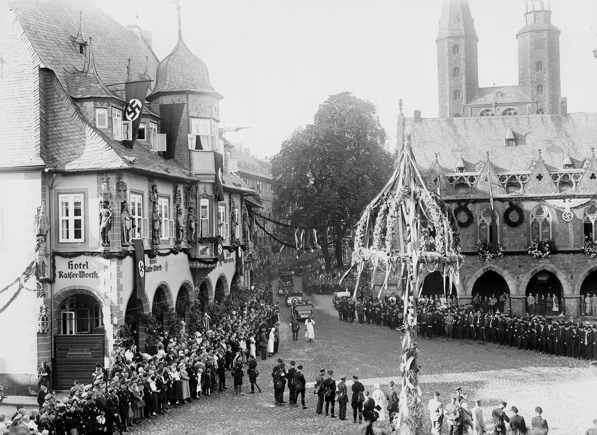
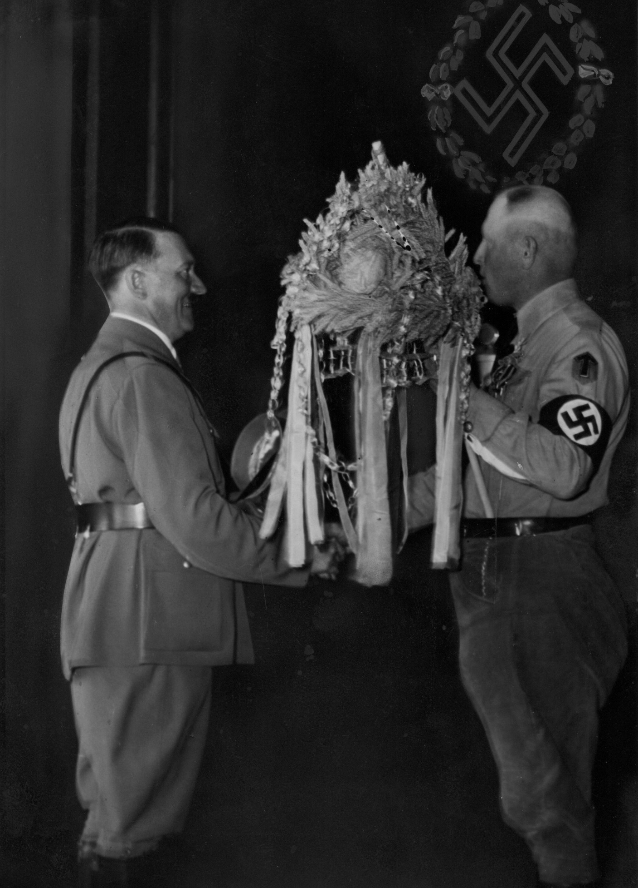

Goslar in der NS-Zeit
Erntedankfest
Erntedankfeste
hatten in der ersten Hälfte des 20. Jahrhunderts im weiten ländlichen Raum Deutschlands eine große Bedeutung für die Menschen. Denn
eine schlechte Ernte bedeutete nicht nur schrumpfendes Einkommen der Landwirte, sondern leere Regale und überteuerte Lebensmittel
für die gesamte Bevölkerung. Seit Jahrhunderten war dieses Fest eine feierliche kirchliche Angelegenheit. Es war nicht an ein fixes
Datum gekoppelt, sondern ein im Oktober bewegliches Sonntagsfest, abhängig von Erntezeiten in den jeweiligen Regionen.
Hitler führte im Einvernehmen mit Propagandaminister Goebbels und Reichsbauernführer Darré und mit Zustimmung der Kirchen ab 1933 dies Fest als nationalsozialistisches Kultritual am ersten Sonntag im Oktober ein. Der Bückeberg bei Hameln wurde Austragungsort des national-zentralen Reichserntedankfestes. Tausende kamen zu dieser im Sommer 1933 neu errichteten Weihestätte, bei der Hitler, Darré und ihr Gefolge den Blut-und-Boden-Kult zelebrierten und die Politik der NS-Machthaber feierten. Goslar nahm als Reichsbauernstadt im Rahmen der Erntedankfeiern eine besondere Position ein. Die Stadt schmückte und feierte sich, ganz besonders in den Jahren 1934 bis 1936, als Adolf Hitler sie aus diesem Anlass besuchte. Die Massen jubelten ihm bei der Fahrt durch die Stadt zu.
Das Jägerbataillon unter Kommandeur Erwin Rommel trat Hitler zu Ehren vor der Kaiserpfalz an, im Kaiserhaus wurde Hitler bei Anwesenheit der Reichsnährstandführer und städtischer Prominenz eine Erntekrone überreicht. Mit Kriegsbeginn und Lebensmittelbewirtschaftung war die NS-Erntedankherrlichkeit in Goslar vorbei.
Hitler führte im Einvernehmen mit Propagandaminister Goebbels und Reichsbauernführer Darré und mit Zustimmung der Kirchen ab 1933 dies Fest als nationalsozialistisches Kultritual am ersten Sonntag im Oktober ein. Der Bückeberg bei Hameln wurde Austragungsort des national-zentralen Reichserntedankfestes. Tausende kamen zu dieser im Sommer 1933 neu errichteten Weihestätte, bei der Hitler, Darré und ihr Gefolge den Blut-und-Boden-Kult zelebrierten und die Politik der NS-Machthaber feierten. Goslar nahm als Reichsbauernstadt im Rahmen der Erntedankfeiern eine besondere Position ein. Die Stadt schmückte und feierte sich, ganz besonders in den Jahren 1934 bis 1936, als Adolf Hitler sie aus diesem Anlass besuchte. Die Massen jubelten ihm bei der Fahrt durch die Stadt zu.
Das Jägerbataillon unter Kommandeur Erwin Rommel trat Hitler zu Ehren vor der Kaiserpfalz an, im Kaiserhaus wurde Hitler bei Anwesenheit der Reichsnährstandführer und städtischer Prominenz eine Erntekrone überreicht. Mit Kriegsbeginn und Lebensmittelbewirtschaftung war die NS-Erntedankherrlichkeit in Goslar vorbei.


Offizielles Plakat zum Erntedank
Bild: aus Privatbesitz
Bild: aus Privatbesitz

Der mit Menschen Gefüllte Marktplatz erwartet den Führer

Der Führer erhält die Erntekrone
Bild: Stadtarchiv Goslar Zg 99(29)
Bild: Stadtarchiv Goslar Zg 99(29)